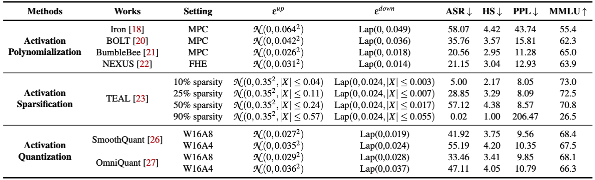

Abstract

Large Language Models (LLMs) have showcased remarkable capabilities across various domains. Accompanying the evolving capabilities and expanding deployment scenarios of LLMs, their deployment challenges escalate due to their sheer scale and the advanced yet complex activation designs prevalent in notable model series, such as Llama, Gemma, Mistral. These challenges have become particularly pronounced in resource-constrained deployment scenarios, where mitigating inference bottlenecks is imperative. Among various recent efforts, activation approximation has emerged as a promising avenue for pursuing inference efficiency, sometimes considered indispensable in applications such as private inference. Despite achieving substantial speedups with minimal impact on utility, even appearing sound and practical for real-world deployment, the safety implications of activation approximations remain unclear.
In this work, we fill this critical gap in LLM safety by conducting the first systematic safety evaluation of activation approximations. Our safety vetting spans seven state-of-the-art techniques across three popular categories (activation polynomialization, activation sparsification, and activation quantization), revealing consistent safety degradation across ten safety-aligned LLMs. To overcome the hurdle of devising a unified defense accounting for diverse activation approximation methods, we perform an in-depth analysis of their shared error patterns and uncover three key findings. We propose QuadA, a novel safety enhancement method tailored to mitigate the safety compromises introduced by activation approximations. Extensive experiments and ablation studies corroborate QuadA’s effectiveness in enhancing the safety capabilities of LLMs after activation approximations.
Activation Approximation Taxonomy
Activation approximation techniques aim to accelerate inference by simplifying or compressing the computation of activation functions. This section outlines three representative and widely adopted approximation strategies:
- Activation Polynomialization — Approximates complex non-linear activation functions (e.g., GELU, SwiGLU) with piecewise or low-degree polynomials. This is especially crucial in encrypted inference settings (e.g., MPC/FHE), where standard functions are computationally prohibitive. Prominent implementations include Iron, BOLT, BumbleBee, and NEXUS.
- Activation Sparsification — Leverages the runtime sparsity of activation tensors by zeroing out low-magnitude values, thereby skipping the corresponding computations. This dynamic and input-dependent pruning approach is exemplified by methods such as TEAL and CATS.
- Activation Quantization — Discretizes high-precision activations (e.g., FP16) into low-bitwidth formats (e.g., INT4/INT8) to reduce both memory footprint and arithmetic overhead. Notable techniques include SmoothQuant and OmniQuant.
Key Research Observations
- Observation I: Activation approximations degrade safety before utility, causing large language models to generate coherent but harmful responses to malicious inputs.
- Observation II: Approximation-induced errors in the early layers of the model are significantly more harmful to safety than those in later layers.
- Observation III: Harmful prompt activations form identifiable clusters in latent space, but approximations can shift them toward benign regions, effectively bypassing safety checks.
Activation Approximation-Aware Alignment (QuadA)
QuadA is a safety alignment strategy designed to preserve the robustness of LLMs against a wide range of activation approximation techniques. It is seamlessly integrated into the post-training alignment pipeline of LLMs and introduces three targeted algorithmic innovations based on empirical findings:
- Adversarial Training via Most Vulnerable Approximation (MVA): Incorporates the empirically derived worst-case approximation perturbation to expose the model to maximal safety degradation during training.
- Selective Layer Perturbation: Injects approximation noise only into the early, safety-sensitive transformer layers—identified via constrained optimization—to maximize safety impact while preserving utility.
- Activation Space Regularization: Clusters harmful activations by penalizing their dispersion in the latent space, reducing the chance of misclassification as benign after approximation.
QuadA Objective Function
The training objective of QuadA builds upon the Direct Preference Optimization (DPO) loss, augmented with regularization based on cosine similarity in activation space:
Since the output of the original safety-aligned model is harmless when there is no activation approximations, we can set it as the reference model \(\pi_\text{ref}=\pi_{\theta_0}\) to ensure that the outputs with activation approximations align with those without.
Empirical Results
- Safety Gains: QuadA significantly reduces attack success rates (ASR) and harmfulness scores (HS) across all tested activation approximation scenarios.
- Robustness to Adaptive Attacks: Demonstrated strong resistance against sophisticated jailbreak methods such as AutoDAN, GCG, and DRA.
- Model Scalability: Evaluated from 3B to 405B parameter scales, QuadA shows consistent improvements in safety with minimal utility degradation.
Citation
@article{zhang2025activation,
title={Activation Approximations Can Incur Safety Vulnerabilities Even in Aligned LLMs: Comprehensive Analysis and Defense},
author={Zhang, Jiawen and Chen, Kejia and He, Lipeng and Lou, Jian and Li, Dan and Feng, Zunlei and Song, Mingli and Liu, Jian and Ren, Kui and Yang, Xiaohu},
journal={arXiv preprint arXiv:2502.00840},
year={2025}
}